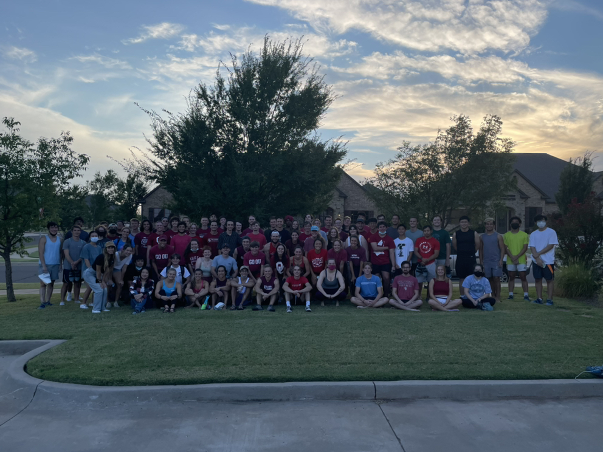

About
Joining
Any OU student can join regardless of experience or athleticism.
Our recruitment is usually during the second week of each semester, we are also at the club fair.
Our fee varies from semester to semester (ask us in our GroupMe).
Practices (Managed by our team Capitan)
We hold practices on most Tuesdays and Thursdays from 19:00 to 21:00.
They are an amazing way to meet new people and improve climbing skills.
The exercises usually follow the competition season (excluding speed), though our home gym mainly focuses on bouldering.
Trips
No crash pad or quickdraws? No problem. Our trips vary from outdoor climbing in the Wichitas to trips down to other Texas climbing gyms. They happen quite often and are organized in our groupme.